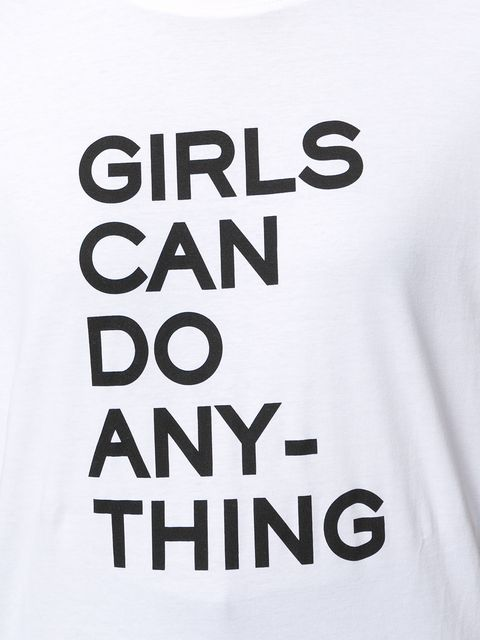

예비 신부는 무엇이 불만이었을까 ?
게시: 2019-05-23T06:30:38+09:00
작년부터인가... 페미니스트 운동과 그에 대한 반발로 여성 혐오 경향이 생겨났었지요. 최근 대림동 여경 사건으로 다시 또 그런 문제가 시끄러워졌더군요. 자격이 되는지는 잘 모르겠습니다만 저는 스스로를 페미니스트라고 생각합니다. 대림동 여경 사건에 대해서는... 술취해서 난동부리는 남성을 혼자서 힘으로 제압하고 수갑까지 혼자 채워야 비로소 경찰 자격이 있다면 우리 동네 파출소의 40~50대 배나온 남성 경찰들도 모조리 옷을 벗어야 하는 것 아닌가 싶습니다. 또 키가 평균 이하인 남자들도 모조리 탈락이고요. 경찰이 술에 취해 난동을 부리는 취객에게 쩔쩔 매는 장면은 사실 전에도 꽤 많았는데, 이번만 화제가 되는 것은 대상이 여성 경찰이기 때문이지 않나 싶어서 좀 씁쓸합니다.

오늘 끼적거리는 잡상은 대림동 여경과는 전혀 다른 이야기입니다. 최근 아는 사람의 아는 사람, 그러니까 저는 모르는 어느 결혼을 앞둔 젊은 커플의 작은 갈등 문제에 대해 이야기를 들었습니다. 그 갈등의 전후 관계는 이렇습니다. 아래 액수는 그냥 예시입니다. 1) 남자는 월 300 수입. 여자는 월 200 수입. 2) 전세자금은 남자가 2억 대출을 받아서 마련. 3) 갈등의 원인은 남자의 제시안 : "여자의 월급으로 생활비를 대고, 남자의 월급은 모조리 대출금 상환에 쓰자." (제 블로그에 출입하시는 분들은 아마 남성분들이 압도적으로 많을 것이라고 자신하는데) 여러분께서는 저 위 남자분의 제시안에서 특별히 뭔가 이상하거나 잘못된 점이 느껴지십니까 ? 만약 뭐가 잘못된 것인지 모르신다면 여러분들도 여자 입장에서 생각하시는 공감 능력이 조금 떨어지시는 것 같습니다. 저 젊은 예비 신랑도 자신의 제안에 무엇이 잘못 되었다는 것인지 전혀 이해를 못 했다고 합니다. (저는 대번에 이해했습니다. 이거 으쓱으쓱 해야 하나 ?) 저 제시안을 들은 여성분은 대뜸 불공평하다면서 불만을 제기했습니다. 여성 입장에서는 그럴 수 있겠다 싶은 것이, 전세 계약을 남자 이름으로 해놓았는데 남자의 돈으로는 모두 전세 대출금을 갚는데 사용한다면 남자의 돈은 사실상 저축이 되는 것이고, 여자의 돈은 생활비로 소비되어 사라지는 돈이 되어버리기 때문입니다. 만에 하나, 2년 뒤 이혼이라도 하게 된다면 여자는 아무 저축금이 없는 상태가 되지만 남자는 자기 이름으로 된 전세금을 가져올 수 있으니 대출금을 상환하고도 2년간의 자기 월급이 고스란히 자기 이름으로 남게 되는 것입니다. 그 예비 신부가 왜 불만이었는지 예비 신랑이 이해하고 나면 아마 기분이 나빴을 것 같습니다. 이제 막 결혼하는 마당인데 여자가 벌써 이혼 준비부터 하고 있다고 하면 신랑으로서야 기분 나쁠 수 있겠지요. 제가 집에 가서 와이프에게 이 이야기를 하니, 와이프는 이렇게 설명하더군요. "꼭 우리나라에 국한된 문제일지는 모르겠지만, 결혼하는 남녀 관계에 있어 시댁과의 관계에 있어서나 이혼 위험에 있어서나 분명히 여자가 더 약자의 위치에 있다. 모든 약자들은 있을 수 있는 위기 상황에 미리 대비하려는 경향이 있다. 강자는 당연히 그런 걱정하지 않는다. 이건 여자가 이혼 생각부터 한다는 것이 문제가 아니라, 약자의 입장을 남자가 이해해줘야 하는 문제이다." 저는 제 와이프 의견에 100% 공감합니다.
결국 그 예비 부부가 어떤 결정을 내렸는지는 모르겠습니다. 물론 그냥 남자 제시안대로 따른다고 해도, 여자가 생활비를 댄 증거가 있으니 이혼 소송을 걸면 여자가 낸 생활비 기여분 만큼을 받아낼 수 있다고 생각합니다만, 대부분의 경우 이혼 소송보다는 별로 유쾌하지 않은 합의 이혼이 많다는 점을 생각하면, 확실히 여자에게 불리한 제안 같기는 합니다. 특히 우리나라는 미국과는 달리 이혼시 양육비라든가 재산 분할이라든가 하는 점에서 매우 남성 중심적으로 되어 있기 때문에 더욱 그렇습니다. 사실상 여자들은 법적 보호를 받기 매우 어렵지요. 공정한 제안은 어떻게 될까요 ? 일단은 저도 잘 모르겠어요. 매매 거래의 경우엔 남자 지분 78% 여자 지분 22% 등으로도 계약이 가능할 것 같은데, 전세 계약의 경우엔 그런 것이 가능할지 잘 모르겠거든요. 그냥 공동 명의의 전세 계약을 하는 것이 바람직할 것 같은데, 그럴 경우 더 많은 소득이 있는 남자 측에서 불만이 있을 것 같습니다. 아마 남자 100, 여자 100씩 공동 생활비를 내고, 남자 소득 200과 여자 소득 100을 각각 따로 저축했다가 나중에 결정하는 것이 최선일까요 ? 쉽지 않네요. 실제로는 어떻게들 하시는지 모르겠습니다.
아마 많은 남성분들은 이렇게 분노하실 겁니다. "애초에 전제가 잘못 되었다, 왜 남자가 전세 자금을 다 마련해야 하느냐 ? 왜 여자는 달랑 혼수 몇 푼 해오면서 남자보고는 몇 억에 달하는 집을 구해오라고 요구하느냐 ?" 이 이야기 속의 커플도 그렇습니다만, 많은 경우 남자의 소득이 더 많고 남자의 나이가 더 많습니다. 아마 여성분들은 그것부터가 뿌리 깊은 남녀차별의 결과이니 그것부터 바로 잡아야 한다고 주장하실 것 같아요.
제 생각으로도 왜 남자가 가장 부담이 큰 (전세든 매매든) 집 마련을 도맡아야 하는지 이해가 가지는 않습니다. 그냥 남녀 형편에 맞게 64%+36% 혹은 46%+54% 등 자기 몫대로 명의를 가지는 것이 가장 좋다고 생각합니다. 물론 시댁과 처가와의 관계, 가사노동과 육아의 부담 분배 등도 공평하게 해야 하겠지요. 물론 이것도 우리나라 전통 사회 관습과는 많이 다르기 때문에 쉽지 않습니다. 저도 아들이자 사위인데, 제가 처가에 가는 것과 제 와이프가 시댁에 가는 것은 심리적 부담 자체가 다를 것이거든요. 저야 처가에 놀러가는 기분으로 가지만 와이프는 시댁에 일하러 가는 기분일 수 있으니까요. 분명히 우리 사회의 부부 관계는 여성에게 불리하긴 합니다. 역시 쉽지 않습니다.
아마 그래서 이 모든 불합리와 불공평을 다 덮고 가는 방법은 사랑 밖에 없다고 하는 것 같습니다.